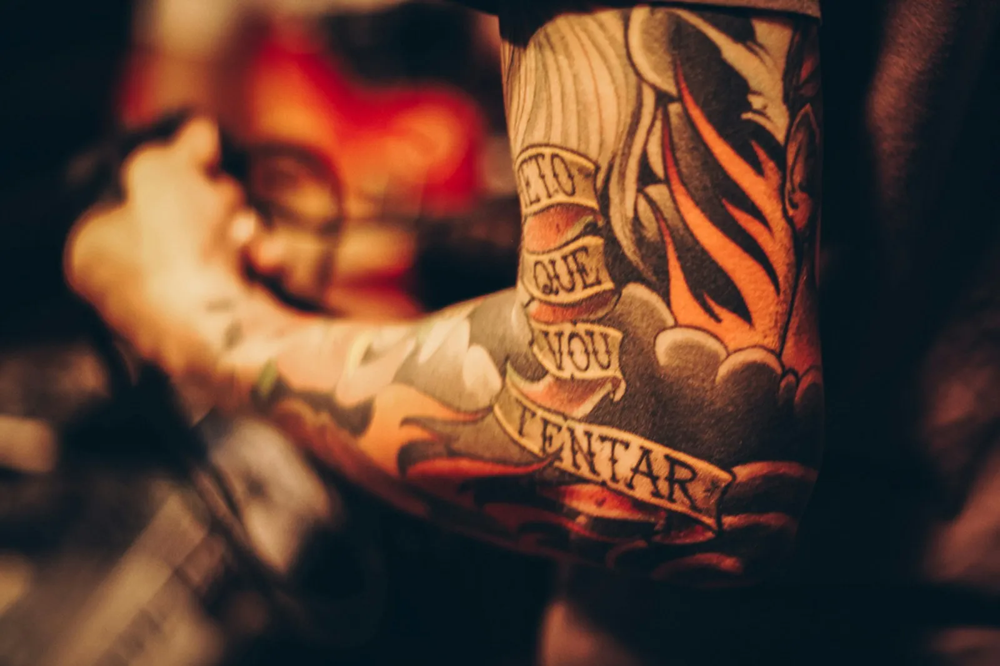
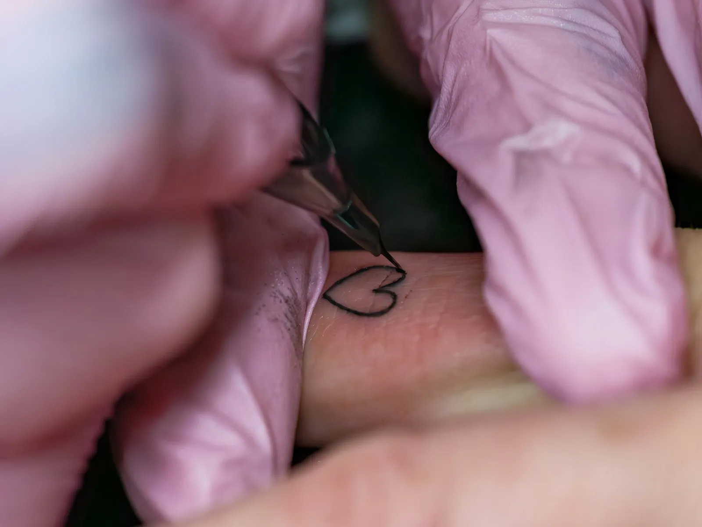
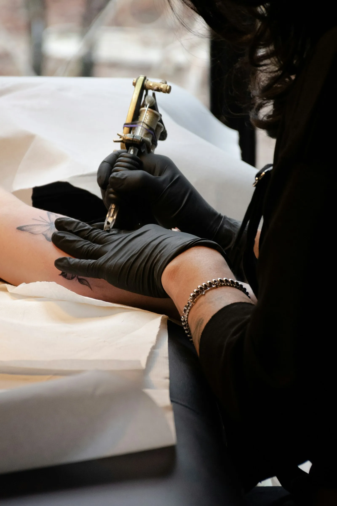
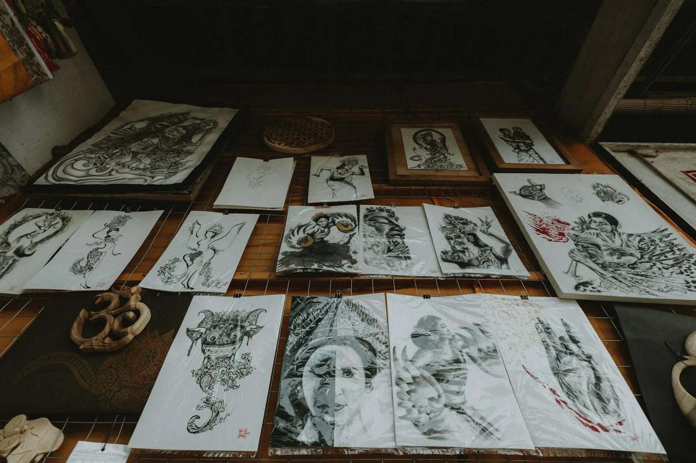
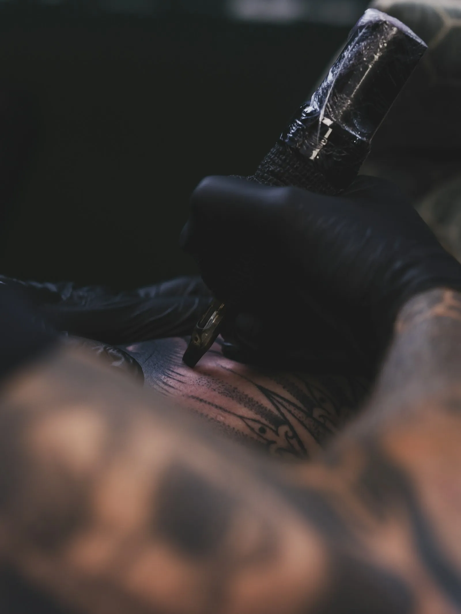
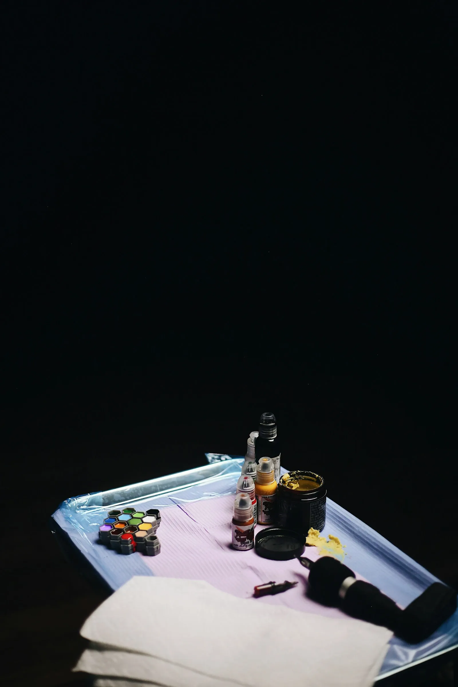

Werk
Gezet in de studio
Fijn lijnwerk, bloemen, tekst of iets groters met schaduw. Elk stuk wordt op maat getekend.




Bij Sub Rosa krijgt je tattoo de tijd die hij verdient. Je vertelt wat hij voor jou betekent, er wordt samen een ontwerp uitgewerkt en pas als het helemaal klopt, wordt er gezet.

Vroeger hing er een roos aan het plafond als wat er gezegd werd, binnen de muren moest blijven. Daar komt de uitdrukking vandaan. Veel tattoos hebben een verhaal dat je niet aan iedereen vertelt. Hier mag dat, in alle rust.
sub rosa, letterlijk: onder de roosFijn lijnwerk, bloemen, tekst of iets groters met schaduw. Elk stuk wordt op maat getekend.


Beantwoord vier korte vragen. Op het einde staat je bericht klaar om via WhatsApp te versturen.
Schuif tot het ongeveer klopt. Precies hoeft niet.
Er wordt op afspraak gewerkt. Zo is er tijd voor jou, en niet tien mensen tegelijk in de studio.
Je vertelt wat je wil en waarom. Foto's, schetsen of een paar woorden zijn genoeg om te starten.

Op maat getekend voor jou en de plek. Wat beter kan, wordt bijgestuurd tot het klopt.

Steriel materiaal, een propere werkplek en tijd voor pauzes. Daarna krijg je uitleg over de nazorg.


Sub Rosa zit in de Nederstraat in Oudenaarde. Geen grote zaak met een wachtrij aan de deur, maar een studio waar je persoonlijk wordt geholpen, van het eerste bericht tot de laatste controle.
Wie hier een tattoo laat zetten, komt vaak terug. Dat zie je ook aan de reviews: een 5,0 uit 96 beoordelingen op Google.
MieEr wordt op afspraak gewerkt. Stuur eerst een berichtje, dan weet je zeker dat er iemand is als je langskomt.
Via WhatsApp of Instagram. Gebruik gerust de aanvraag hierboven, dan staat alles meteen in je bericht.
Stuur een foto van de tattoo die je wil laten bedekken, liefst bij daglicht. Dan hoor je wat kan en hoe groot het nieuwe ontwerp dan moet worden.
Dat hangt af van de grootte, de plek en het detail. Na je aanvraag krijg je een prijs, voor er iets vastligt.
Vraag het gerust even op voorhand. Een vriend of vriendin als steun bij een eerste tattoo is meestal geen probleem.
Je krijgt na je sessie uitleg mee. Kort samengevat: proper houden, dun insmeren, niet krabben en de eerste weken uit de zon en het zwembad blijven.
DIEen woordje uitleg van Stijn
Ik maakte deze demo voor jullie om te tonen wat er kan. Na een kort gesprek maak ik er iets veel persoonlijkers van, helemaal naar jullie wens.
Vrijblijvend. Ik kom langs of we bellen.
Op maat, op jullie eigen domein.
Geen voorschot. Jullie betalen pas als alles klaar is.
Hosting, domeinnaam en kleine wijzigingen, zoals nieuwe openingsuren.
Omdat een voorbeeld meer zegt dan een mail. Zo zien jullie meteen wat er kan, en het kost jullie niets.
Nee. Het gesprek is vrijblijvend. Vinden jullie het niks, dan is het daarmee gedaan.
Na ons gesprek staat jullie site binnen 10 tot 14 dagen online.
Zeker. Jullie domeinnaam kan gewoon blijven, de nieuwe site komt in de plaats van de oude.
Nee, dat doe ik op basis van ons gesprek. Eigen foto's zijn mooi meegenomen, maar niet nodig om te starten.